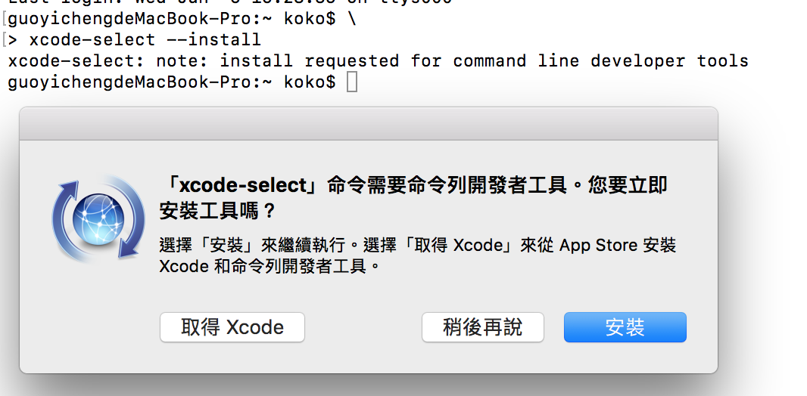
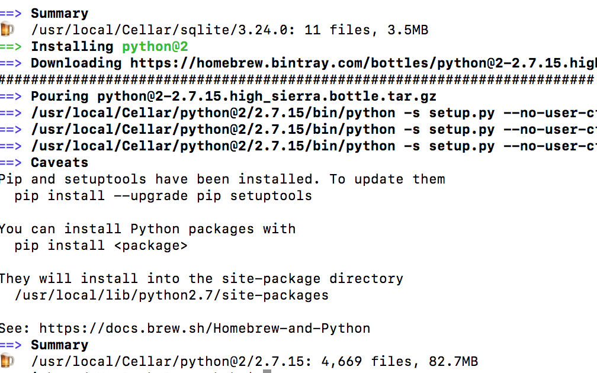
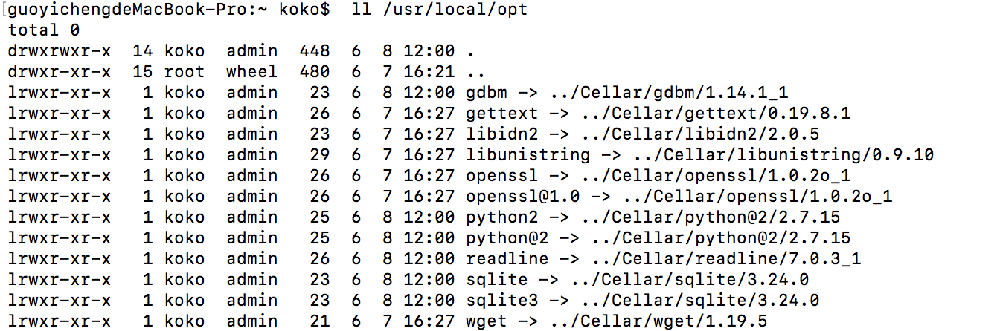
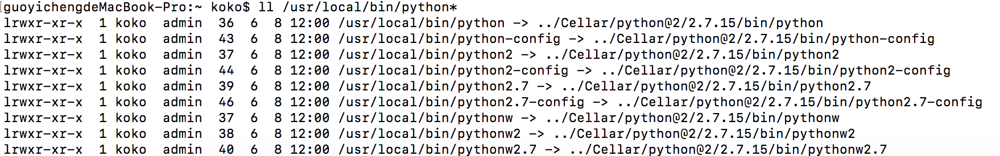
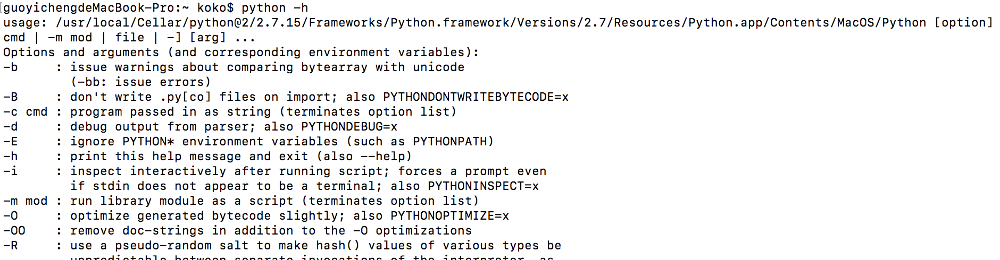

安裝 Python 2 在 Mac 上 (Python2.7.15 為例）
Posted on Tue 12 March 2019 in Python
前言
對於使用 Mac 的開發者而言，雖然 Python 都會有內建在系統中，但是可能因為 Mac 出產時間，所以版本會過舊，如果想要自己安裝 Python 的話，可以參考此篇文章，如何在 Mac 上安裝 Python 2 到系統中，並且可以被讀取到安裝的 Python 版本，而不是系統原本內建的。
安裝步驟
步驟一：安裝 XCode 或 Xcode 命名行工具
這是開發 Mac 或 iPhone 等 iOS 程式所用的開發工具，安裝此工具的原因是因為，在安裝 XCode 時， 也會依同安裝 C 編譯器，而 Python 的底層是以 C 編寫成，所以會需要 C 的 Compiler 來驅動。
開啟 Terminal App ，並且輸入以下指令安裝 Xcode 的命名行工具：
$> xcode-select --install

除了上述的方式，也可以透過 Mac 上的 App Store 安裝完全版的 XCode 開發工具。
步驟二：安裝 Homebrew
Homebrew 是 Mac 專用的套件管理工具，如同 Linux 中的 apt 或是 yum 工具，後續透過 Homebrew 來安裝 Python ，進入 Homebrew 官網，依照步驟，在 Terminal 輸入下列此串：
$> /usr/bin/ruby -e "$(curl -fsSL https://raw.githubusercontent.com/Homebrew/install/master/install)"

步驟三：設定讀取 Homebrew 指令的環境變數
安裝完後，為了要使 Homebrew 的指令可以被 Mac 的 Terminal 中的 Bash 程式讀取到，需要設定 /usr/local/bin 與 /usr/local/sbin 至環境變數。
建立一個 .bash_profile 或是 .profile （如果已有其中一個檔案則不需再次建立）並且在檔案中新增此行：
export PATH=/usr/local/bin:/usr/local/sbin:$PATH
或是可以透過 Shell 的另一種語法雙引號來設定
export "PATH=/usr/local/bin:/usr/local/sbin:$PATH"
設定完成後，關閉 Terminal 應用程式重開 或是直接在 Terminal 中輸入以下指令啟動 .bash_profile 或 .profile 啟動即可（以下以 .bash_pofile 為例 ）：
$> source ~/.bash_pofile
接著便可以透過輸入 brew 來做所有跟 Homebrew 有關的套件管理操作行為了！
例如要對 Homrbew 診斷可以輸入以下指令：
$> brew doctor
更詳細的 Hombrew 安裝可以參考 Homebrew (1) - Mac 上安裝 Homebrew 套件管理工具。
步驟四：透過 Homebrew 安裝 Python
安裝 Python 其實除了透過 Homebrew 的方式外，也可以透過 Python 官方網站，下載 .pkg 的安裝包，但是因為安裝完後檔案的路徑會分別在：
位置一： /Library/Frameworks/Python.framework
位置二： /usr/local/bin/
這兩個位置，位置二是一個 symlink。另外，安裝包也會附帶 IDLE、PythonLauncher 這兩個軟體，安裝在 Application 資料夾。
因此需要除了自己紀錄位置外，刪除時，也要自己去找尋上述兩個位置與 IDLE、PythonLauncher 分別刪除，所以不推薦。
而透過 Homebrew 安裝除了， Homebrew 會列出 Python 的安裝位置外，也會把其他未來安裝的套件放在同一處，移除與升級都可以透過指令達成，因此非常便利，所以推薦在 Mac 上使用 Homebrew 安裝。
在 Homebrew 中， 目前 Python 2 會以 python@2 的套件名稱呈現，如下執行：
$> brew install python@2
Homebrew 會一同連 pip 也安裝進去，如下安裝完的結果與訊息：

安裝完後 Homebrew 會自動為放在 Cellar 的 Python@2 在 Mac 的 /usr/local/opt 與 /usr/local/bin 分別建置 link 檔案，如下為 /usr/local/opt：

/usr/local/bin 也有：

因此，雖然在另一篇在 Mac OS X 上安装 Python 2 有提及需要設定以下 /usr/local/opt/python@2 在環境變數：
export PATH="/usr/local/opt/python@2/libexec/bin:$PATH"
但因為 Homebrew 也會在 /usr/local/bin 中建立 Python2 的 Link 環境，因此其實不需要再去設定 /usr/local/opt/python@2
除非今天環境中也有安裝 Python 3 ，並且希望可以透過 .bash_profile 明確區分 Mac 優先以 python 讀取的指令是來自 Python 3 或 Python 2 時，可以放進去，參考 Python2 與 Python 3 共存的設定 (以 Mac 為例) 中文章
而當安裝完後， 重新開啟 Terminal 直接輸入 Python 時，會讀取到 Homebrew 安裝的 Python 嗎？
答案是根據在 ~/.bash_profile 中 PATH 設定的順序。
因為再設定環境變數時，系統內建的環境變數 $PATH 是放在後頭， /usr/local/bin 是在前面，因此輸入 Python 指令時 Bash 讀取 ~/.bash_profile 會先讀到 /usr/local/bin 底下 python@2 的 python 指令 Link 檔，因而找到 Homebrew 安裝的 Python 2。
因此我們透過透過 python -h 查看後會發現目前的確讀到 Homebrew 安裝的 Python：

至此已經完成 Python2 的安裝。